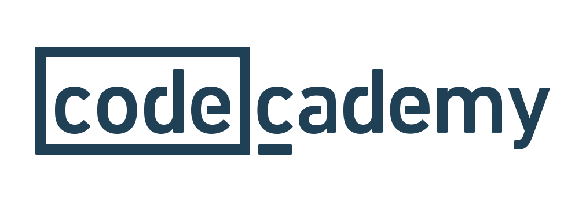
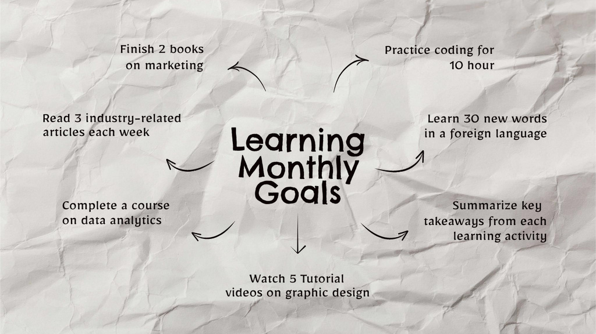

Beginner Learning Path for IT Students
Starting your journey in Information Technology can be overwhelming, but with the right roadmap, you can build a strong foundation. This beginner path is designed to introduce you to core IT concepts and skills.
Key Areas to Focus On:
- Basic Computer Hardware and Software Concepts
- Introduction to Programming (Python recommended)
- Fundamentals of Networking
- Basic Web Development (HTML, CSS)
- Computer Security Principles

Recommended Resources
Here are some great resources to get you started:
- CS50's Introduction to Computer Science - Harvard's free online course
- Python for Everybody - Coursera specialization
- FreeCodeCamp - Interactive coding challenges
- Codecademy - Hands-on coding lessons
Month-by-Month Learning Plan
Month 1-2: Computer Fundamentals
Start with understanding how computers work at a basic level. Learn about hardware components, operating systems, and basic software applications.
Month 3-4: Programming Basics
Begin with Python, a beginner-friendly language. Learn variables, loops, functions, and basic data structures.
Month 5-6: Web Development Foundations
Learn HTML and CSS to understand how websites are built. Create simple static web pages.
